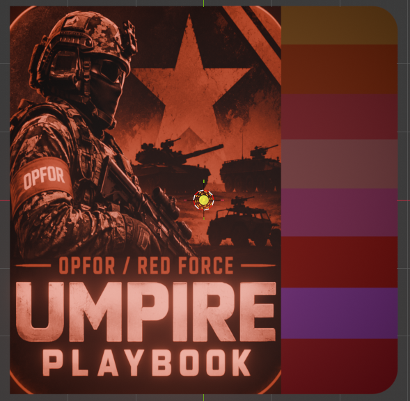
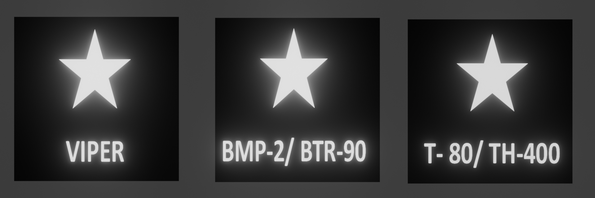
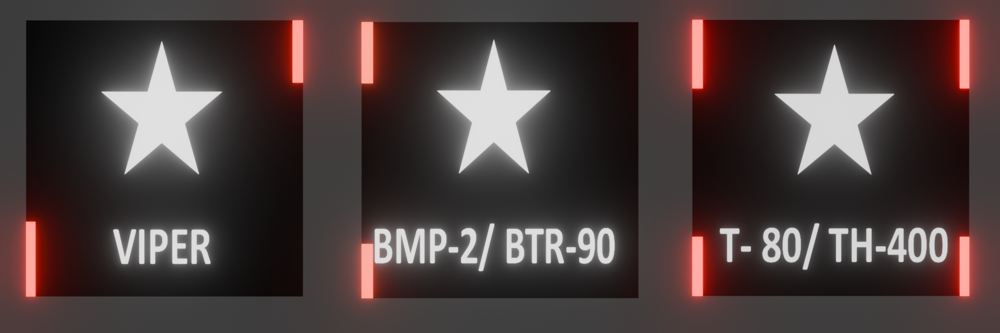

OPFOR / RED FORCE
UMPIRE PLAYBOOK
A practical quick-reference for Red Force Umpires to prepare, deploy, observe, assess and report during training activities.
Aim
Provide a clear, standardised reference for Red Force Umpires to observe, assess, record and report in line with the exercise scenario, training objectives and safety requirements.
Red Force Umpire Role
Understand the approved plan, observe what happens on the ground, apply the relevant umpiring standard and communicate clear observations to the conducting team.
Core Principle
Red Force operates according to the approved plan and reacts to Blue Force actions. The umpire's job is to assess what actually occurs against the applicable exercise standard.
Scope
Use this playbook across the preparation, deployment, mounted and dismounted phases of Red Force simulation.
Preparation
People, equipment, information and coordination before the activity.
Deployment
Checks while the force moves into its deployment area.
Mounted Fight
Vehicle status, tactical signs, TES and visual umpiring cues.
Dismount Fight
Personnel, TES, obstacles, close combat, conduct and safety references.
Preparation
Get the task, ground and umpire resources clear before deployment.
Before CMT / ATEC
- Liaise with the POC / supporting body at least one day before conducting.
- Confirm the exercise brief, scenario and umpiring requirements.
- Know the AO, scheme of manoeuvre, danger areas and deployment areas.
- Confirm LFA / NLFA, obstacles and CCPs.
Information to Obtain
- Number of Echoes / participating elements.
- Area of operations.
- Scheme of manoeuvre.
- Danger areas.
- Deployment area and boundaries.
- Obstacle locations and CCPs.
Umpire Kit
- Red Force armband
- Colour flags
- Cylume sticks
- Vehicular tactical signs
- Wire cutter / glove
- White tape
- Serviceable TES
- Spare batteries
- UCG
Kit & Markings
Use clear visual identifiers so the umpire can recognise Red Force personnel, vehicles and status quickly.
Personnel
Red Force personnel are identified with the appropriate red armband / visual marking. Confirm TES is correctly fitted and serviceable before the activity.
Vehicle / Tactical Signs
Tactical signs must be fixed securely and remain visible. Day and night configurations should be checked before movement.
Day Tactical Sign

Night Tactical Sign

OPFOR Soldier & TES Reference
Use the soldier model as a visual recognition aid. OPFOR personnel are identified by the red band worn on the arm.
OPFOR Trooper
Rotate manually and zoom to inspect the visual reference. The red arm band is the quick recognition cue.
Deployment
Confirm essential checks before and during movement into the deployment area.
Before Movement
- Dismounted troops are equipped.
- TES is fitted and serviceable.
- Weapons / equipment are prepared as directed.
- Full water bottles and required blank / practice ammunition are carried.
- Deployment area is safe and understood.
Night Operations
- Use the approved red cylume / night identification arrangement.
- Check vehicle tactical signs are fixed and visible.
- Confirm umpire visual markers before entering the area.
Obstacle 3D Reference
Four dedicated references. Drag to rotate and scroll / pinch to zoom. These obstacle viewers do not auto-rotate.
Obstacle — Open Day
Day configuration, open position.
Obstacle — Closed Day
Day configuration, closed position.
Obstacle — Open Night
Night configuration, open position.
Obstacle — Closed Night
Night configuration, closed position.
Obstacle Signage
Visual reference for the obstacle identification / signage arrangement.

Obstacle Safety
Use the approved exercise brief and safety controls. Do not improvise obstacle distances, entry methods or clearance rules.
Umpire Check
- Know the obstacle location and intended training purpose.
- Confirm the safe deployment / approach area.
- Ensure participants understand the approved obstacle procedure.
- Stop and seek direction if the situation falls outside the approved plan.
Night / Visibility
- Confirm the night visual identification arrangement.
- Keep approved markers visible.
- Do not rely on a model alone for field safety decisions.
Mounted Fight
Apply vehicle status, TES and visual recognition standards during mounted operations.
Observe
- Vehicle identity and tactical marking.
- Vehicle status / life indication.
- TES serviceability.
- Reaction to Blue Force actions.
- Approved exercise boundaries and safety controls.
Record / Report
- What happened?
- Which vehicle / element?
- What status applied?
- What TES / umpiring evidence supports the assessment?
- What safety issue, if any, requires immediate action?
Vehicle Status & 3D Reference
Use the vehicle flags as the visual status reference. Red flags simulate additional vehicle life. Each model can be manually rotated and zoomed.
Admin Move
1 × yellow flag. Vehicle status reference for administrative movement.
Destroyed Vehicle
1 × red flag + 1 × yellow flag. Vehicle status reference.
Vehicle with No Flag — 1 × Live
0 red flags mounted. This vehicle has 1 simulated life.
OPFOR Vehicle with 2 × Lives
1 × red flag mounted. This vehicle has 2 simulated lives.
OPFOR Vehicle with 3 × Lives
2 × red flags mounted. This vehicle has 3 simulated lives.
TES Preparation
Force preparation is important to ensure mission success. TES and LDM plate serviceability should be checked before going into the field because the equipment forms part of the exercise simulation of soldier weapon and equipment serviceability.
If TES / LDM plates are unserviceable for either the training unit or OPFOR in the field, the vehicle is automatically treated as “down” and “out-of-action”. Both sides therefore need to confirm TES serviceability before and during the activity.
Trainer Vehicle
Training-unit visual reference. The model is kept separate from the OPFOR vehicle reference.
OPFOR Vehicle
Red Force / OPFOR vehicle visual reference.
Tactical Sign — Keep Fixed
The tactical sign should be fixed securely so the vehicle remains clearly identifiable during the activity.
Night Trainer Identification
At night, the Trainer uses the approved blue or white cylume identification arrangement. The blue cylume stick is mounted at the front and rear right of the vehicle as briefed.
Dismount Fight
Use personnel identification, TES, obstacle and close-combat references together with the approved exercise plan.
TES & Personnel
- Confirm TES is fitted and serviceable.
- Use Red Force visual identification.
- Observe engagements against the approved scenario.
- Record relevant outcomes and evidence.
Close Combat
- Follow the approved close-combat safety rules and distances.
- Maintain safe conduct around participants.
- Stop unsafe activity and seek the appropriate conducting authority when required.
Conduct / POW
Apply the exercise rules and approved conduct requirements consistently.
Conduct
- Remain professional and impartial in umpiring.
- Follow the approved exercise plan and safety instructions.
- Use only authorised simulation equipment and markings.
- Report incidents clearly and promptly.
POW Handling
- Follow the exercise's approved POW handling procedure.
- Maintain safety, dignity and accountability.
- Escalate any situation outside the approved scenario to the appropriate conducting authority.
Future App
Designed as the foundation for a standalone Red Force Umpire reference app.
Offline
Bundle the HTML, models, images and app assets into an Android package so the reference can be carried without relying on GitHub Pages.
3D References
Keep the manual rotation and zoom controls for quick visual recognition of vehicles, personnel and obstacles.
Quick Reporting
Future versions can add structured observation, assessment, recording and reporting workflows.